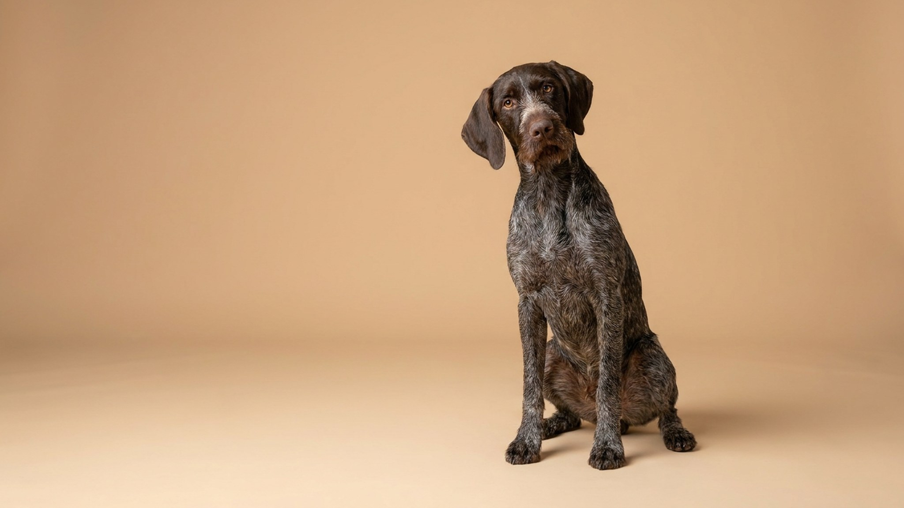

Вы отходили с курцхааром положенный час, а дома он снова носится по комнатам и грызёт плинтус. Дело не в дурном характере: этой породе физически мало обычного выгула — ей нужна работа для тела и головы. Разбираем, сколько нагрузки реально требует немецкий короткошёрстный пойнтер, каким он растёт в семье и на что смотреть в уходе.
🐾 Питомец ведёт себя странно?
AnimaLife расшифрует поведение кошки и собаки и подскажет, что делать. Попробуйте бесплатно прямо в мессенджере.
Курцхаар — универсальная подружейная собака: столетиями его выводили, чтобы он весь день искал дичь в поле, замирал в стойке и приносил добычу, в том числе из воды. Эта выносливость никуда не делась в городской квартире. Пойнтер создан двигаться часами, и если энергию некуда деть, она уходит в порчу вещей, лай и навязчивое поведение — не от вредности, а от нерастраченного «топлива».
Одной прогулки «вокруг дома» курцхаару не хватит. Ориентир для взрослой собаки — 1,5–2 часа активности в день, и это не медленный шаг на поводке, а движение с настоящей нагрузкой:
Щенку и подростку нагрузку дозируют мягче: суставы ещё формируются, поэтому длительность бега и прыжки лучше согласовать с ветеринаром.
Курцхаар ласков, привязчив и плохо переносит одиночество — это не собака для тех, кого сутками нет дома. При достаточной нагрузке он спокоен и нежен с детьми, схватывает обучение на лету и очень хочет угодить хозяину.
Короткая шерсть неприхотлива: вычёсывание раз в неделю и мытьё по мере необходимости. А вот висячие уши стоит регулярно осматривать и держать сухими, особенно после купания. У активной глубокогрудой собаки важно развести во времени большую порцию еды и интенсивный бег — не кормить плотно прямо перед нагрузкой и сразу после неё; конкретный режим обсудите с ветеринаром.
Плановые осмотры, профилактика паразитов и контроль веса — база, которая бережёт подвижному пойнтеру суставы на годы. Курцхаар подойдёт активным людям и семьям, готовым каждый день вкладывать время в движение и обучение, — тогда дома вы получите спокойного, преданного и на удивление деликатного компаньона.
🐾 Здоровье питомца под контролем
AI-ветеринар, дневник здоровья и персональные советы для вашего питомца — установите AnimaLife бесплатно.
🐾 Понравился разбор?
Подпишитесь на канал — каждый день разбираем по одному тревожному симптому у кошек и собак: что в пределах нормы, а когда пора к врачу. Подпишитесь, чтобы не пропустить разбор, который может спасти здоровье вашего питомца.
Материал носит информационный характер и не заменяет очную консультацию ветеринара.